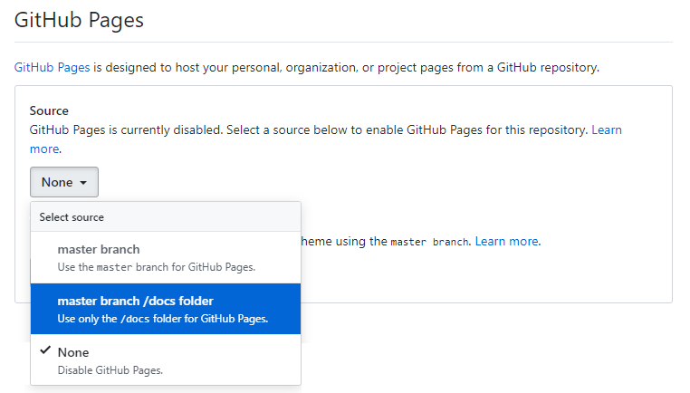

Videx npm template
Template for npm packages with testing and automatic documentation.
- Compiler: Babel
- Module bundler: Rollup
- Testing: Jest
- Documentation: JSDoc
- JSDoc template: Docdash
- Code compressor: Terser
Repository
Setup guide
Cloning repository
Start by cloning the template repository to desired directory.
git clone https://github.com/equinor/videx-npm-template.git
Modify package.json
Fields that need to be modified are:
- name: The name of the npm package.
- description: The description of the npm package.
- repository.url: Should point to the GitHub repository.
- keywords: Keywords to make it easier to find the package on npm.
- author: Package author. For multiple authors, consider using 'contributors'.
- bugs.url: Should point to "GitHub repository"/issues.
- homepage: Could point to "GitHub repository"#readme.
Install dependencies
Install all dev dependencies defined in package.json using node.
npm install
Usage
Creating package
The entry point for the actual npm package is defined as 'src/index.js'. This can be changed within 'rollup.config.js'. Any public variables, functions and classes should be exported within this file.
Important: Default values on input parameters are strongly discouraged. Babel compilation integrates these variables into the functions themselves, which breaks documentation and IntelliSense.
Example of how default values can be avoided:
Before
export function hello(name = 'npm') {
return `Hello ${name}!`;
}
After
export function hello(name) {
if (name === undefined) name = 'npm';
return `Hello ${name}!`;
}
Optional parameters should be documented!
/**
* ...
* @param {String} [name='npm'] Name to greet (Default: 'npm')
* ...
*/
Document generation
npm run docs
Three part process:
- Deletes the docs-folder, if it exists.
- Automatically generates documentation to a new docs-folder.
- Copies the images-folder into docs.
The copying of images makes it possible to refer to local images within the README!
Creating tests
All tests are defined within the test-folder. Jest naming convention is to place tests for SOMESCRIPT.js in a single file SOMESCRIPT.test.js.
Testing
npm run test
Executes all tests defined within the test folder.
npm run test:watch
Executes all tests, but does not return immediately. Makes it possible to re-run failed tests quickly.
Building/Compiling
npm run build
Compiles the code found within the src-folder. Build is outputted to a new dist-folder.
Publication
npm run pub
Attemps to publish the package to npm. As part of the publishing process, the source code is re-compiled.
Publish documentation
GitHub pages is used to show documentation. To set up GitHub pages, start by navigating to the settings tab within the GitHub repository.

Scroll down and set GitHub pages source to the docs-folder of the master branch.

Publishing the documentation will produce a link. This link can be included in the README for easy navigation.

Sample documentation can be found here.
Sample function
| hello |